Transformamos a vida das pessoas através do empreendedorismo.
Se você também quer fazer parte dessa mudança, inscreva-se no nosso Processo Seletivo.
Se você também quer fazer parte dessa mudança, inscreva-se no nosso Processo Seletivo.
Nossos principais números:
Pessoas
Impactadas
Projetos
Realizados
Sendo Assessor, você vai ter a oportunidade de colocar em prática seus conhecimentos, desenvolver habilidades e fazer projetos para ajudar empreendedores. Temos vagas em diversas áreas, e você pode escolher de acordo com a sua formação.
Pré-requisitos:
VAGAS DISPONÍVEIS POR ÁREAS:
Inscrições Online
Entrevista + Dinâmica de Grupo
Painel com Diretores
Processo de Compromisso
Acesse aqui e participe! Nesta página você vai encontrar todas as informações para fazer sua candidatura!
Não aceitaremos currículos por e-mail ou cadastrados em outro site que não seja o endereço citado acima ou essa página. As inscrições estarão abertas até o dia 02/02/2020.
Você pode descobrir um pouco mais sobre nossa história nessa clicando aqui.
Todas as comunicações do Processo Seletivo acontecerão através de e-mail. Verifique a caixa de entrada, SPAM e outras abas do seu e-mail. Caso tenha qualquer pendência ou necessidade de entrar em contato conosco, basta enviar um e-mail para gp@luesalvador.com, com o título "PROSEL 2019".
Pode, mas existem alguns pré-requisitos e competências que são mínimas para participação dos programas. Esses itens serão avaliados e informados nos retornos do processo seletivo.
Você receberá um retorno, independentemente de ser positivo ou negativo, na mensagem por e-mail.
No momento da inscrição você poderá escolher até duas área, porém no decorrer do processo, poderemos direcionar os candidatxs, levando-se em consideração o seu perfil e as oportunidades nas áreas da LUE Salvador.